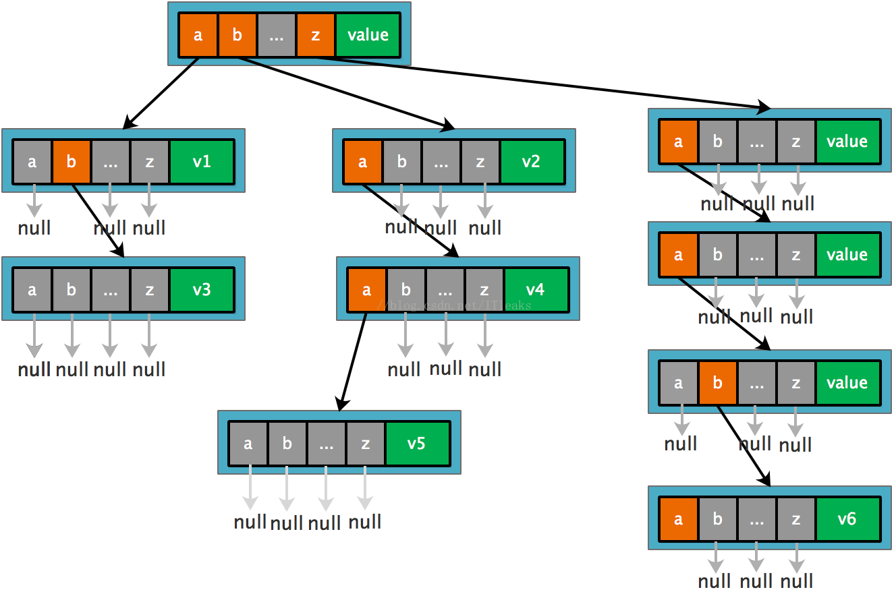
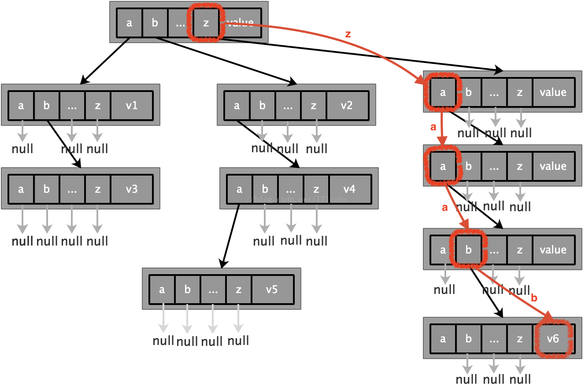
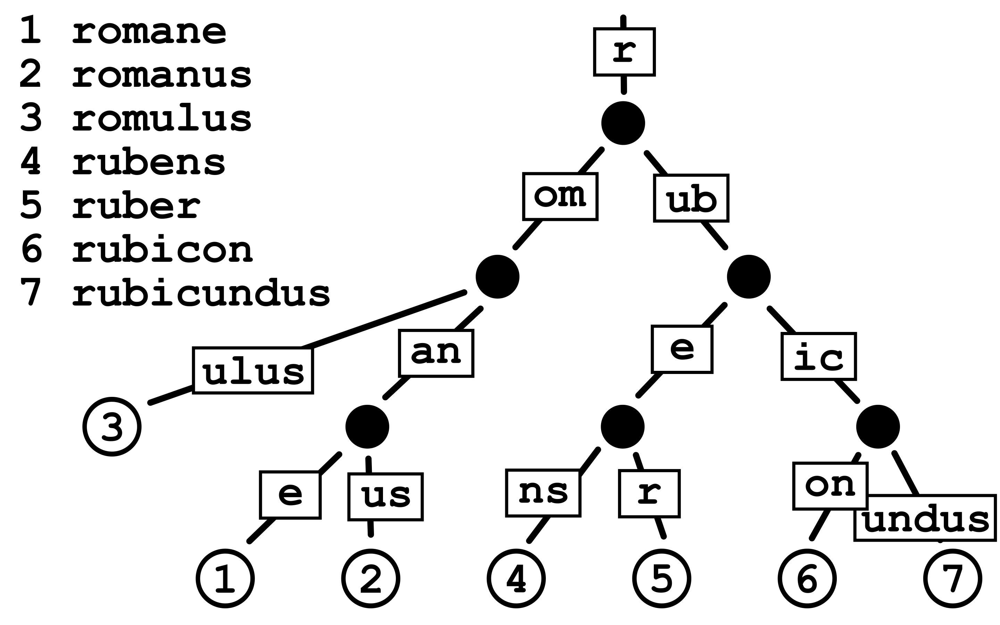

概述
本系列文章分为两部分，第一部分介绍介绍以太坊中使用到的 MPT ( Merkle Patricia Tree ) 的相关背景知识，基本的前缀树，及其改进基数树，以及哈希树。第二部分介绍以太坊中的 Merkle Patricia Tree。
前缀树 (Tire / Prefix Tree)
先给出一个前缀树的例子：

前缀树一种树结构，可以用于存储 (key, value) 对集合。对于树中的每一个节点 node，其形式如下：
1 | [i0, i1 ... in, value] |
其中 i0 ... in 为 key 取值的字母表中的符号，例如，如果使用二进制，其字母表为 {0, 1}，使用十六进制，字母表为 {0, 1, 2, ..., f}。value 为该节点携带的值，该值可以为空，之后对 value 值进行说明。
前面的例子中，由于是英文单词为 key 其字母表为 {a, b, ..., y, z} (只考虑小写)，因此每个节点的形式为：
1 | [a, b, c, ..., x, y, z, value] |
i0 ... in 中的每个值对应一个指向其子孙节点 child 的指针 ( 或者为空指针 NULL )。因此一个节点最多有 n + 1 个子孙节点 ( i0 ... in 各一个 )。例子中根节点有 3 个值包含指向子孙节点的指针，分别为 a, b, z，其余指针值为 NULL。这个指针可以认为是节点之间的边，这个边的值为起始端对应的字母表中的符号。
树中的每一个节点 node 的所有子孙都有相同的前缀，对与任一个子孙节点 child，其前缀值 prefix 为从根节点到 child 节点路径上的所有指针对应的值 ( 也即经过的边的值 ) 按顺序连接的结果。如果 child 节点的的 value 值不为空，则树中便包含 (prefix, value) 的键值对。
上面例子中的前缀树包含的键值对如下：
1 | a -> v1 |
下面说明从前缀树查找 key = 'zaab' 对应值的方法。
由于使用的前缀树以单个字母为符号，所以整个过程需要按顺序遍历 key 中的每一个符号 z, a, a, b，从树中查找指定 key 需要从根节点开始：
- 当前位于根节点，第一个字符为
z，跳到z的指针指向的节点。 - 第二个字符为
a，从当前节点跳到a的指针指向的节点。 - 第三个字符为
a，从当前节点跳到a的指针指向的节点。 - 第四个字符为
b，从当前节点跳到b的指针指向的节点。 - 返回当前节点的
value值。
示意图如下：

基数树 (Patricia Trie / Radix Tire / Radix Tree)
拿上一小节的例子来说，对于查找示意图中的路径 ( zaab )，尽管只存储了一个键值对 ('zaab', v6)，但却使整个树增加到了 5 层，基数树在这种情况合并一些子节点来减少空间开销，例如，将 a、a、b 合并成一个节点 aab，当 key 值为 zaab 时，经过 z 节点后直接进入 aab 节点取出 value即可。不但加快了取操作，还减少了空间使用。
正式的说，基数树是空间优化后的前缀树，简单来说就是当一个节点是其父节点的唯一子节点，则将该节点与其父节点合并来减少空间消耗。相对于常规的前缀树，基数树的边可以是字母表中的单个元素也可以是字母序列，这使得基数树相对来说在小的集合上或共享前缀长的字符串集合上更高效。下面是一个基数树的例子：

哈希树 (Merkle tree / hash tree)

在密码学和计算机科学中，哈希树或 Merkle 树是一种树，其中每个叶节点是数据块的哈希值，并且每个非叶节点的值为其子节点的值的哈希值 (哈希的哈希)。即，Merkle 树是哈希列表的二叉树，父节点的值的是其子节点值的哈希值，叶节点值原始数据块的哈希值。哈希树可以用于有效、安全地验证大型数据结构的内容。
上图是一个哈希树的例子。其中四个数据块 L1, L2, L3, L4 的哈希值被存放在哈希树的叶节点中，之后每两个节点值合并后取哈希得到这两个节点的父节点，以此类推直到只剩下一个节点作为根节点。
参考资料
Patricia Tree · ethereum/wiki Wiki
以太坊MPT原理，你最值得看的一篇
Tire
Radix tree
Merkle tree
Merkle Tree学习